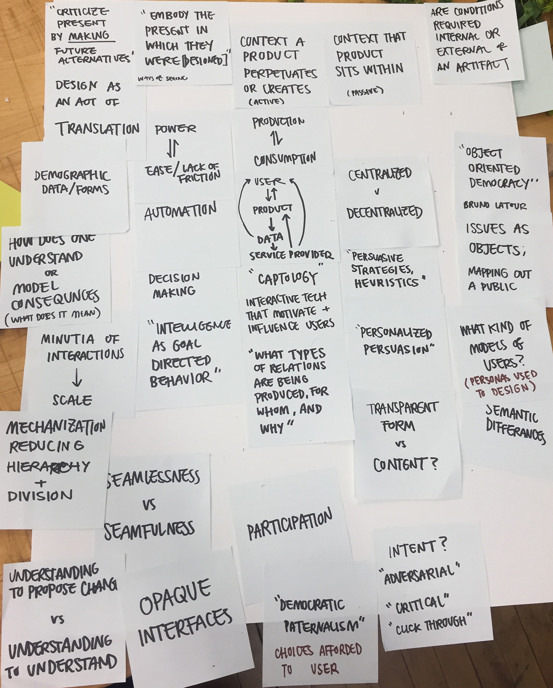
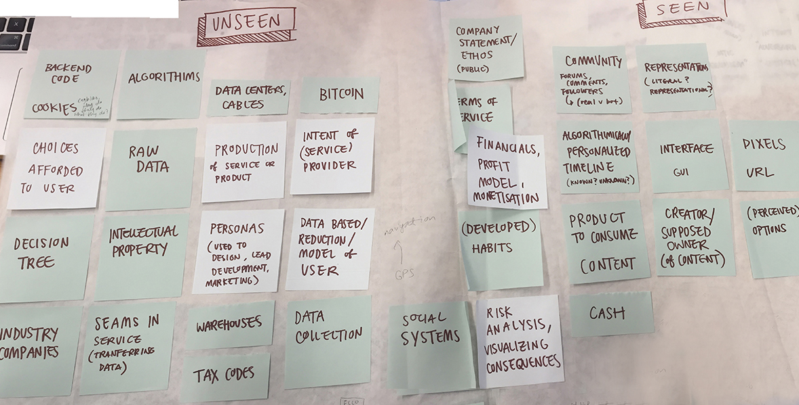
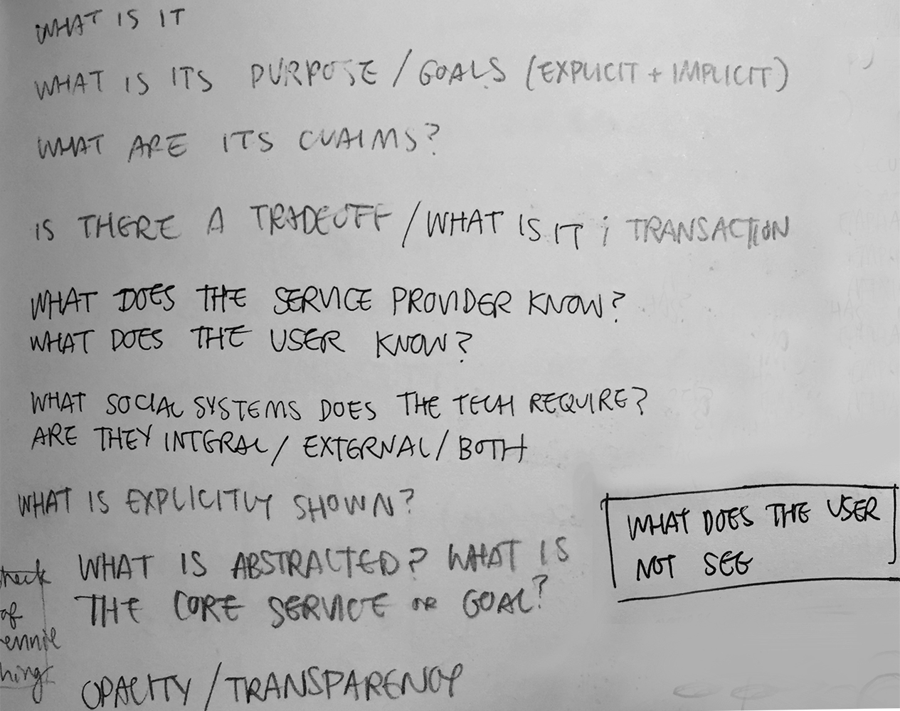
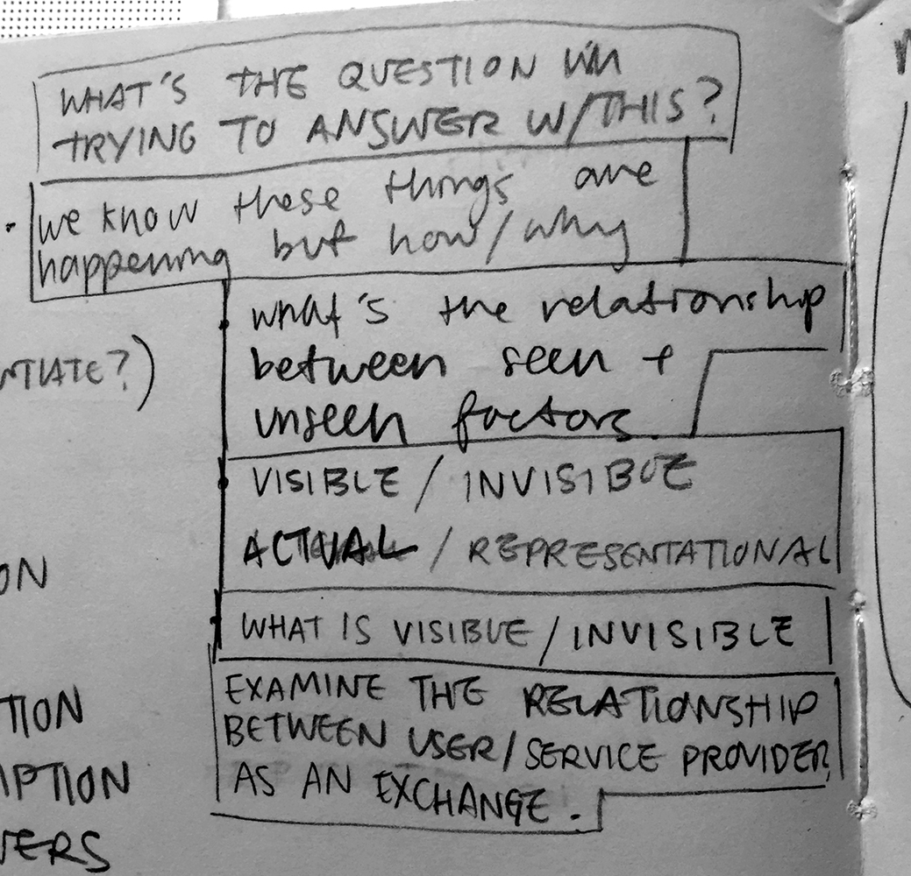
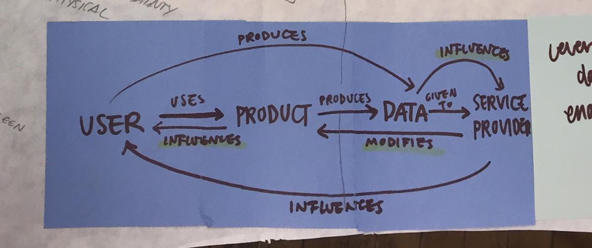
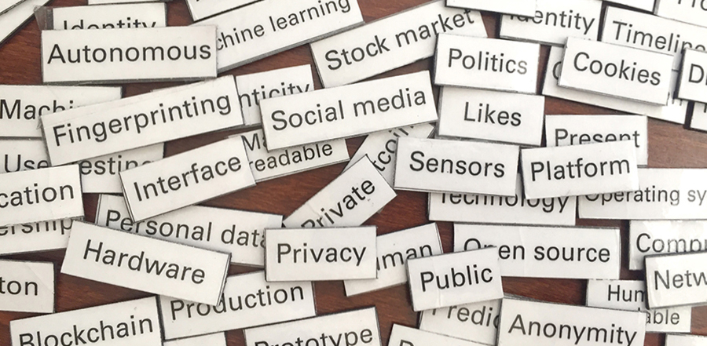
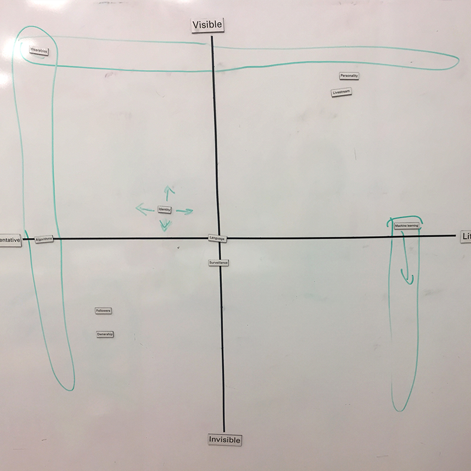
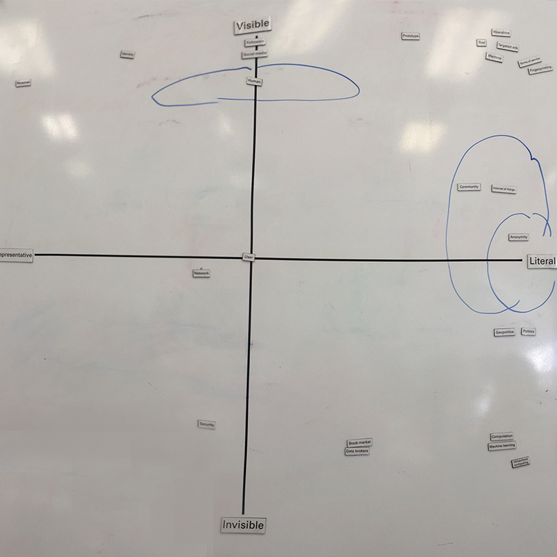
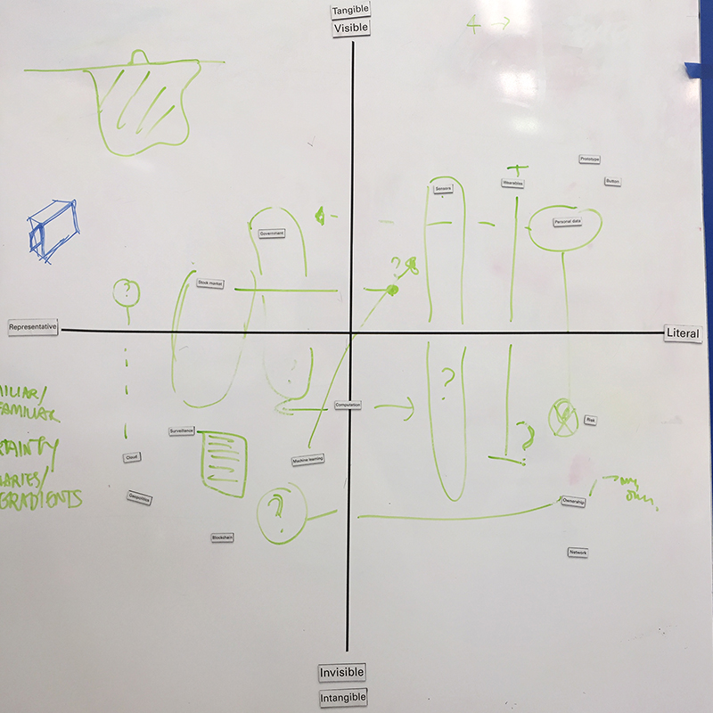

Investigating transparency's role in design
Designing Transparency explores the role perception and abstraction play in design. I define transparency in a design context as the clarity of communication between user and provider and propose methods for evaluating an artifact's transparency.
Full text can be found here.
What is a designer’s responsibility?
Design is the medium through which individuals interact with other individuals, companies, and more. I became invested in exploring how designed objects, especially digital interfaces, inadvertently become proxies and touchpoints for power structures and societal forces.
My research began with cataloging and understanding concealment in designed objects. Topics included black boxes, reflective design, the Stack, and big data among others. Understanding existing literature led to isolating common themes and relationships between artifacts
I planned to catalog digital artifacts and listed questions to construct a profile for each one. Most questions focused on what is allowed to be seen or communicated. However, to properly examine the relationship between users and providers as a space for intervention, I moved away from static case studies and focused on methods that can potentially introduce greater transparency.
 Visualizing Transparency
Visualization techniques like service blueprints and user flows can represent a user/provider relationship but lend themselves to optimizing of interactions. To adequately address transparency, I proposed a 2x2 with Literal/Abstract on one axis, and Visible/Invisible on the other. Visualizing where the product sits on the coordinate plane allows for insights into the transparency of an artifact.

To test the 2x2, I presented CMU students of various disciplines with a variety of common technology and design vocabulary. Interviewing stakeholders with the 2x2 provides designers with potential interventions. Designers can choose to design a product to be closer to a certain area on the graph. Which end is preferable is left to the designer’s discretion.
  Intervening

One word that came up was machine learning (ML). A felt ML was neither abstract nor literal because it's “literally, it’s an algorithm.” On the other hand, B and C felt it was quite literal; the machine is learning. This discrepancy is rather telling; “algorithms” are a set of rules , while “learning” tends to suggest growth and change.
Metaphors are necessary to aid in explaining and understanding, but reductions inadvertently assume or omit things. By focusing on the machine “learning,” the individuals that wrote the algorithm are erased and abstracted by the "machine." If the general public understands ML as “learning”, it may be more appropriate to use Bloom’s Taxonomy, a classification of learning objectives, in addition to technical methods, to evaluate ML. Designers can potentially bring more transparency to ML by improving and emphasizing aspects from Bloom's that ML fails.
A more detailed write up of potential interventions can be seen here.
Conclusion
If design is to be human centered, designers need to go beyond human factors and usability and be sensitive to how a product will impact its users, the relationships being created and perpetuated, and the agency of the user. It is necessary to consider the transparency of ties between the user and the service provider, ensuring users have the agency to critically understand evaluate said relationship.